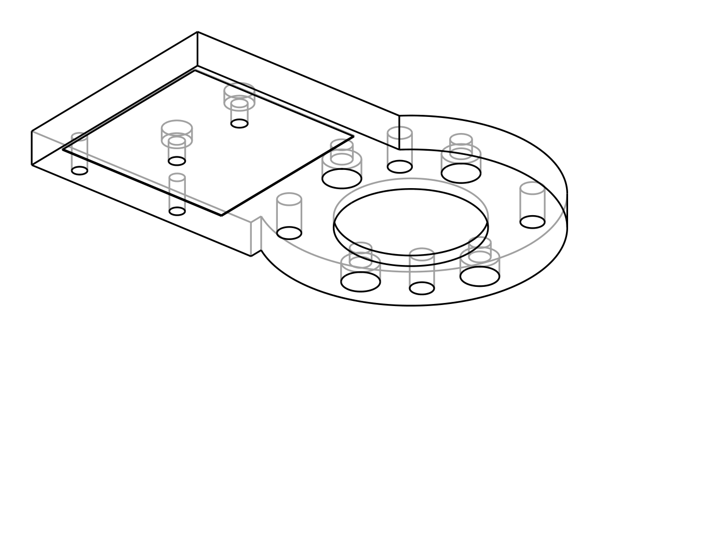
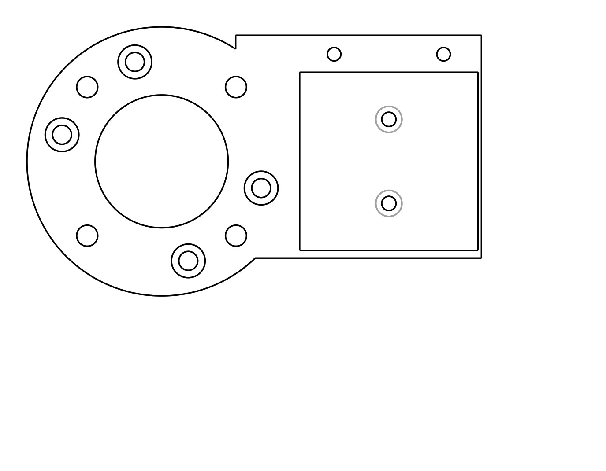

Robot embodiment: Dexmate Vega 1 Pro arm + Sharpa Wave hand + wrist D405
The robot the §1.4 policy controls, playing each clip. Each clip's motion is FlashDexRetarget's kinematic reference: the Sharpa hand on a floating wrist following the round-10 reconstruction, the motion that tab 5's RL policy is trained to track. The arm's 7 joint angles come from an inverse kinematics step with collision avoidance (PyRoki): it keeps the five fingertips where the reference has them and keeps the arm, the camera mount and the camera off the table and off the robot's own body, within the arm's joint and speed limits. Where the hardware behind the palm would be inside the table, it lifts and tilts the palm and re-bends the fingers. Orange ghost: the reference's floating hand; where it differs from the robot's hand, the solver moved the palm. Blue frustum: the wrist D405, orange frustum: the exo D435, each with the depth image the policy gets at that step (near is bright, dark red is invalid: out of range or seen by one imager only). Green frustum: the robot's own point of view, its head camera (the Vega's ZED, nominal 90° × 60° field of view), with a shaded view of the scene from there; it is not a policy input. The checkboxes at the top right of the viewer hide and show each frustum; the choice carries over when you switch clips. This is kinematic: the changed hand pose has not been simulated again, so whether the object is still held is not checked here. The robot is the vendors' CAD in their colours, thinned for the browser to within 1 mm (arm, hand, mount) and 2 mm (the frozen body). Drag to orbit, scroll to zoom; the viewer plays in a loop.
With the palm held exactly where the reference has it, 3 of 10 clips are usable in every frame (70.3% of the frames): in the others the last arm links, the mount or the camera would be inside the table. Anchoring the fingertips instead and letting the palm lift and tilt makes 8 of 10 clips usable in every frame (99.0% of the frames). On the rollouts of tab 5's RL policy (the round-10 run at 110M steps, physically simulated, so the wrist jitters and the object can slip) the same solver gives 7 of 10 clips (96.7% of the frames); those are not shown here.
| Arm | Dexmate Vega 1 Pro, right arm (wrist with force/torque sensor): 7 joints move; chassis, torso, head and left arm are held at one posture |
|---|---|
| Hand | Sharpa Wave, right, 22 joints, on the arm's flange through the camera mount plate (clocked 285° about the tool axis) |
| Controlled joints | 7 + 22 = 29 |
| Stance | right shoulder 1.30 m above the floor (0.50 m above the table top), torso leaning 22° forward; chosen with compare_placements.py so that the arm reaches with its elbow open and clear of itself |
| Wrist camera | Intel RealSense D405 on the palm side of the wrist, looking along the fingers (housing centre 54 mm below the hand's axis, 18 mm behind the palm's wrist end); 848×480 at 60 fps, depth 0.07–0.50 m, policy image 106×60 |
| Exo camera | Intel RealSense D435 / D435i on a stand at the table's left-front corner, (-0.54, -0.28, 1.23) m, 0.90 m from the workspace, 25° down; depth 0.30–1.50 m, policy image 106×60 of a 530×300 window of the stream |
| Camera mount | one flat plate, 64 mm × 8 mm with a 53 × 44 mm tab for the camera, 113 g in aluminium |
Every clip
A frame is usable when the fingertips are within 3 mm of the reference's, the arm and the wrist hardware are above the table, the fingers are no deeper in the table and the hand no deeper in the object than the reference's own (2 mm slack), and no arm joint is faster than its limit. Measured on the exact meshes.
| clip | usable frames | palm moved, max | fingertips off, p95 / max | fingers re-bent, max | wrist hardware above table, min | arm above table, min |
|---|---|---|---|---|---|---|
| pp_1 | 100.0% | 5 mm, 3° | 2.1 / 2.2 mm | 11° | 2 mm | 30 mm |
| pp_2 | 94.0% | 84 mm, 44° | 3.1 / 3.6 mm | 62° | 1 mm | 8 mm |
| pp_3 | 100.0% | 32 mm, 22° | 1.0 / 1.2 mm | 54° | 1 mm | 8 mm |
| pp_4 | 100.0% | 2 mm, 1° | 0.0 / 0.0 mm | 3° | 25 mm | 9 mm |
| pp_5 | 100.0% | 4 mm, 3° | 0.0 / 0.1 mm | 7° | 18 mm | 8 mm |
| prp_1 | 100.0% | 7 mm, 5° | 0.0 / 0.2 mm | 13° | 44 mm | 61 mm |
| prp_2 | 100.0% | 40 mm, 18° | 1.7 / 1.9 mm | 33° | 0 mm | 6 mm |
| prp_3 | 100.0% | 17 mm, 11° | 0.2 / 0.7 mm | 17° | 2 mm | 20 mm |
| prp_4 | 96.5% | 35 mm, 19° | 1.6 / 2.3 mm | 53° | -1 mm | 3 mm |
| prp_5 | 100.0% | 10 mm, 8° | 0.1 / 1.3 mm | 26° | 6 mm | 8 mm |
The wrist camera mount
One flat plate between the arm's wrist and the Sharpa flange, with a tab on the palm side; the D405 is screwed to the tab through its two rear M3 threads, so the whole mount can be cut from 8 mm aluminium sheet. On this arm the plate is also the adapter from the wrist's six-hole pattern to the Sharpa's ISO 9409-1-50-4-M6 flange. The wrist's hole pattern is measured on the vendor's model, not on a drawing: check it on the robot before machining. STEP file (mm).


- 4x M4 x 9 socket head cap screw, head sunk 4.6 mm (plate to the arm's wrist)
- 4x M6 x 10 socket head cap screw (Sharpa flange 4 mm + 6 mm into the plate's M6 threads; tap the four 5.0 mm holes M6)
- 2x M3 x 8 socket head cap screw into the D405's rear threads (head sunk 3 mm; 3 mm of thread in the camera, its limit is 4 mm)
- no dowel pin: the Sharpa flange's pin hole would break into an M4 counterbore
- the D405's USB 3 Micro-B socket faces the thumb side: use a right-angle plug with its two M2 locking screws and tie the cable to the two 3.2 mm holes beside it